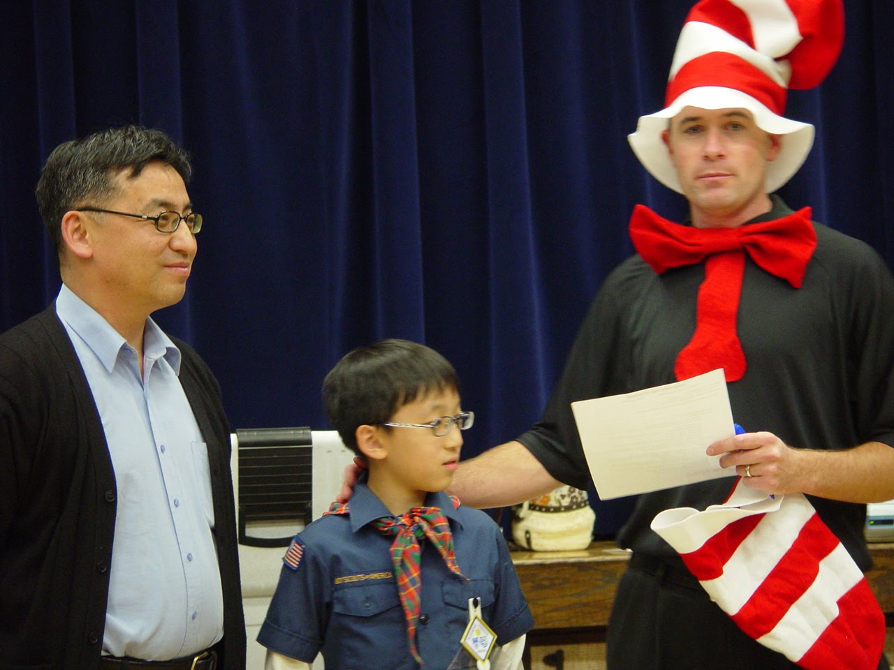
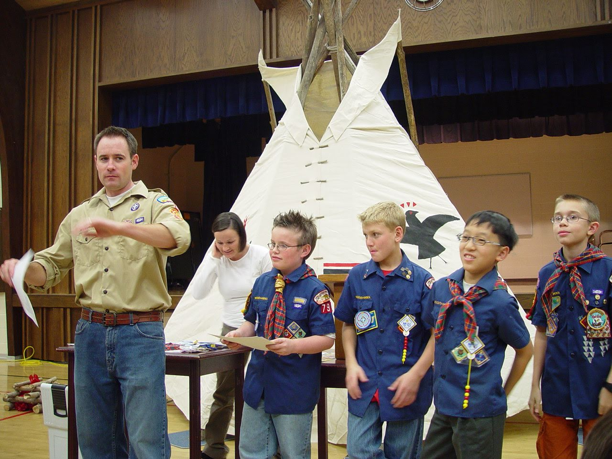

My son told me about the Spring Roll making family get together – scheduled at Noon today.
Before, I would try to come up with a way to excuse myself.
But today, I wanted to be there.
Decided to attend the 9AM Sunday Meeting.
___
Then I realized today’s the Fast and Testimony Sunday.
Wasn’t sure about attending another Ward’s Testimony Meeting.
The meeting was more than I expected.
First, a sister that served with her husband at a YSA1 bore her testimony on how wonderful it was to serve with the young people.
It brought back memories for me. Thank you Sister Espinoza
Then Ashlene, got up and related her therapy experience and how it taught her about identity.
The therapist ask her,
“Who are you?”
She thought about it for a while and she realized that this is where she was taught to say,
“I am a child of God!”
This experience gave her additional insight into the Plan of Happiness
Then Ron R., who is 88, used his cane to get up to the front.
Then he told a story about how he needed a new carpet for his basement. But he was also asked to prepare for 3 years of food storage.
He debated which one to follow, since they were mutually exclusive.
He decided to follow the teachings of the leaders.
Shortly thereafter, a neighbor also carpeted their house.
However, the cat and the carpet couldn’t co-exist, so the neighbor gave a brand new carpet to Brother R for free.
(Brother R told me afterwards, that he has been home from his mission for 65 years. He served in the Central America Mission, which was split from the Mexico Mission)
____
Normally, I would have gone home after the first hour.
But I stayed and the teacher, who also teaches seminary gave a wonderfully prepared lesson.
Found this verse that is applicable for me.
The people that walked in darkness have seen a great light: they that dwell in the land of the shadow of death, upon them hath the light shined.
Which is quoted in Matthew, Chapter 4,
14 That it might be fulfilled which was spoken by Esaias the prophet, saying,
15 The land of Zabulon, and the land of Nephthalim, by the way of the sea, beyond Jordan, Galilee of the Gentiles;
16 The people which sat in darkness saw great light; and to them which sat in the region and shadow of death light is sprung up.
17 From that time Jesus began to preach, and to say, Repent: for the kingdom of heaven is at hand.
The teacher and the class were discussing the 3 temptations of the devil.
Thought how we sell our birthright for something that is temporary and that is worth far less.
Like how Esau, sold his birthright to Isaac.
Give in to temporal needs rather than let the spiritual part of us take charge.
Truman Madsen2 quoted Brigham Young3,
The spirit is pure, and under the special control and influence of the Lord. . . .
Recollect, brethren and sisters, everyone of you, that when evil is suggested to you, when it arises in your hearts, it is through the temporal organization. When you are tempted, buffetted, and step out of the way inadvertently; when you are overtaken in a fault, or commit an overt act unthinkingly; when you are full of evil passion, and wish to yield to it, then stop and let [that’s different than make; it presupposes that the spirit wants this] the spirit, which God has put into your tabernacles, take the lead. If you do that, I will promise that you will overcome all evil, and obtain eternal lives. But many, very many, let the spirit yield to the body, and are overcome and destroyed. [JD 2:256]
Met Blaine W. who used to be Stake Cub Scout Leader. (or maybe served 2 combined Wards as a leader).
Told him about our youngest and we visited and thanked him for his effort.


___
Glad I attended the early Ward meeting.
I didn’t recognize their faces and names, but it seemed like I have sensed the same spirit that they exhibited — over the years.
Saw Brother Tom H. as well as David & Cherie H., parents of Sarah H.
Made some Spring Rolls as a family. It is not so much making rolls but visiting and chatting as we worked.